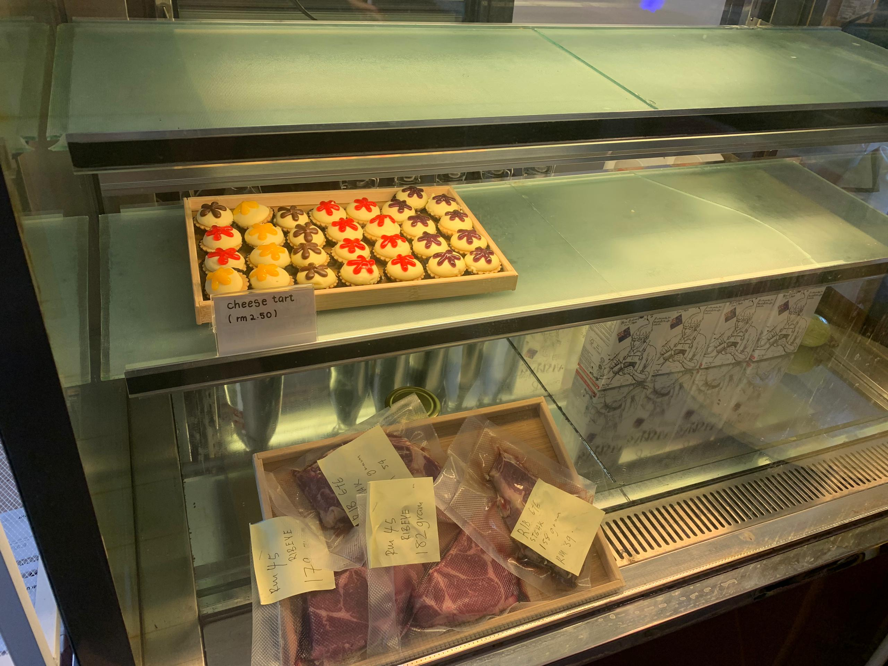
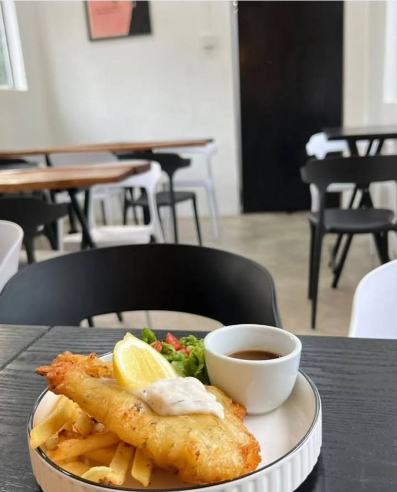
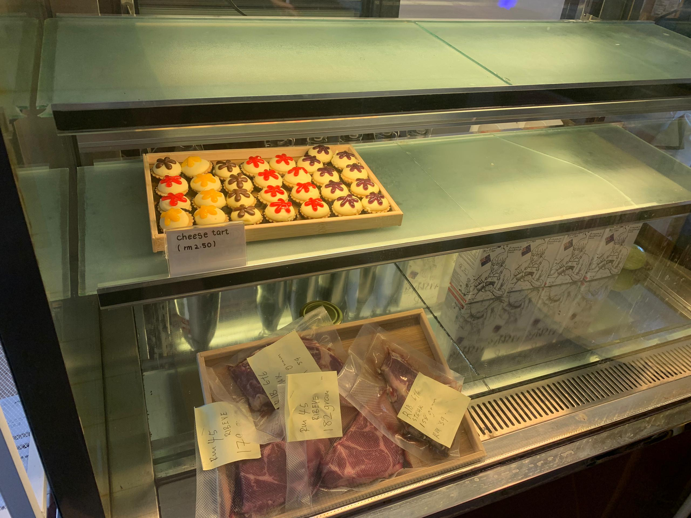
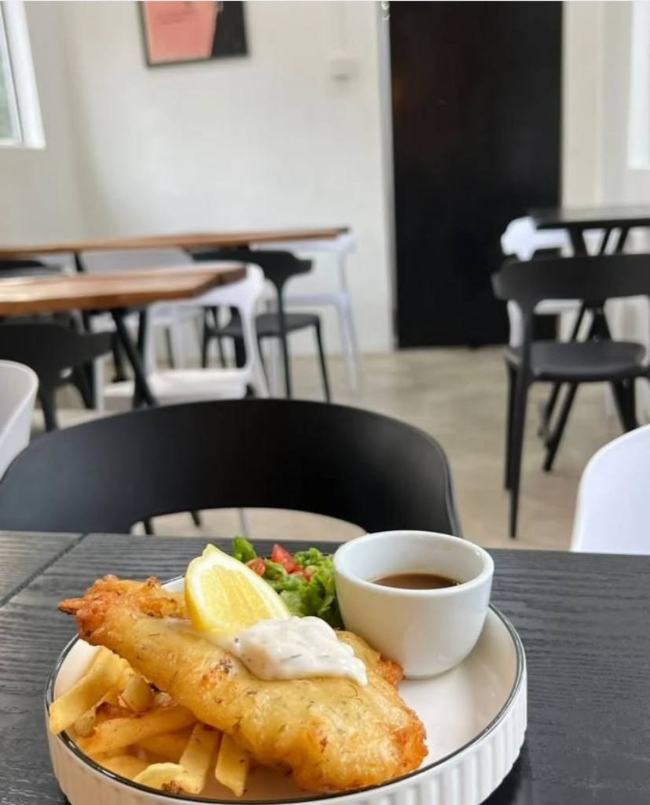
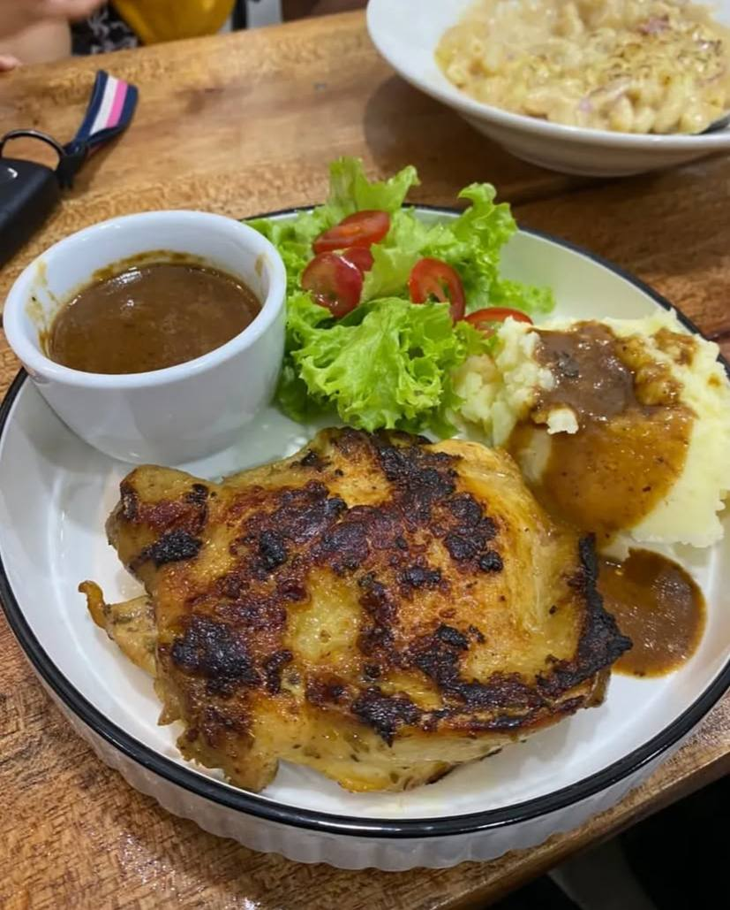
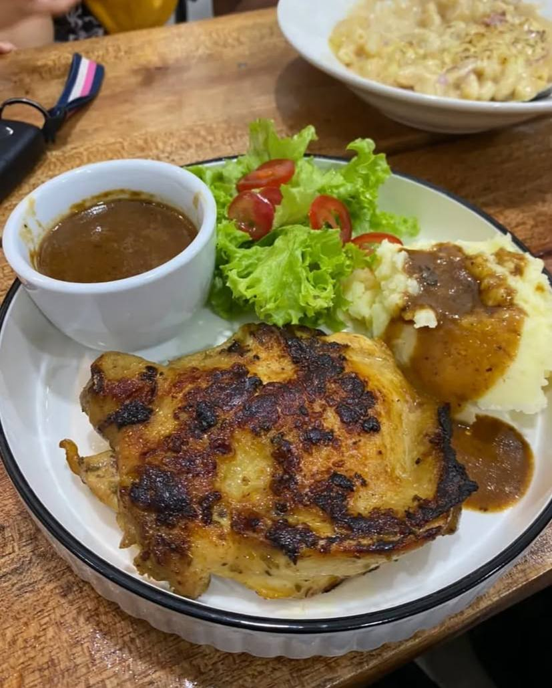

˚ ༘⋆ ✧ MENU ✧˚ ༘ ⋆

 



 



「 ✦ VARIETY FOOD IN TEDUH BY FAR HAUS CAFE ✦ 」
Cafes have become more than just a place to grab a cup of coffee. They are now popular hubs where individuals can enjoy a wide range of food, making them perfect spots for breakfast, lunch, or a light snack. The variety of food offered at a cafe caters to diverse tastes and dietary preferences, offering everything from sweet pastries to savory dishes. This wide assortment not only enhances the cafe experience but also draws in a variety of customers seeking different flavors and meal options.
One of the most iconic and versatile offerings at this cafe is the spagetthi and western food. Cafes typically feature a range of western food. A classic favorite like a dessert such as cheese tart, cakes and more, is being the main interest food, pairs wonderfully with a cup of coffee and tea. These choices allow customers to enjoy a wholesome meal in a casual setting, making cafes an ideal stop for a quick lunch or snack.
This cafes are known for their extensive selection of beverages, which often include a variety of coffee-based drinks, teas, and smoothies. From a strong espresso to a creamy latte or cappuccino, cafes cater to coffee enthusiasts with their diverse coffee options. Additionally, the rise of specialty drinks such as matcha lattes, iced chai lattes, and cold brews has further expanded the drink menu. For those preferring non-caffeinated beverages, many cafes also offer fresh juices, smoothies, and herbal teas, ensuring that there is something for everyone, regardless of dietary preference or taste.